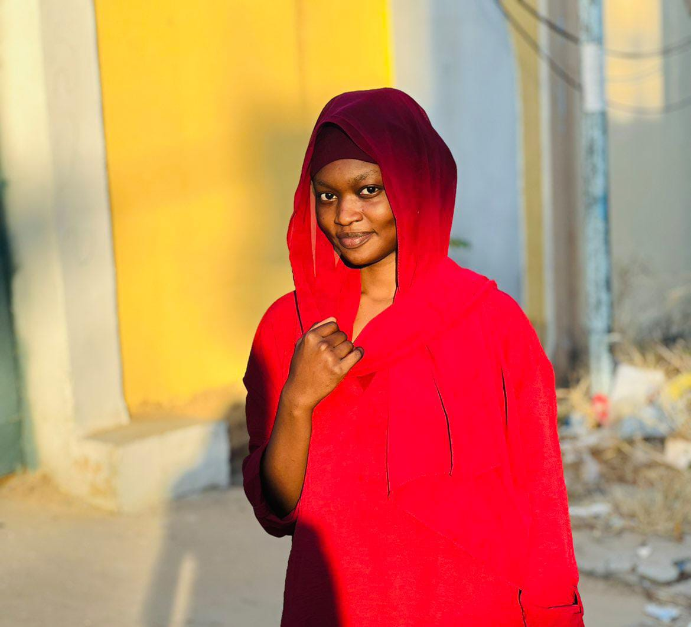

Manager des TIC & Passionnée par l'univers de la mode.

Actuellement en Licence 2 de Management des TIC à l'ENASTIC, je fusionne la rigueur technologique avec l'esthétique du monde moderne.
Mon parcours est guidé par une double vision : la maîtrise des outils numériques et le sens de l'organisation stratégique. Ma passion pour la mode nourrit mon sens du détail et mon dynamisme. J'aspire à allier l'élégance de la forme à l'efficacité de la fonction.
📍 Ndjamena, Tchad | 📧 khadidjadjermahouaiddo@gmail.com | 📞 (+235) 60 50 46 47
Étudiante ambitieuse en Licence 2 de Management des TIC. Passionnée par les défis, j'allie rigueur académique et expertise stratégique technique en communication digitale pour transformer chaque défis en opportunité.
Français : Excellent Arabe local : Compris Anglais : Intermédiaire